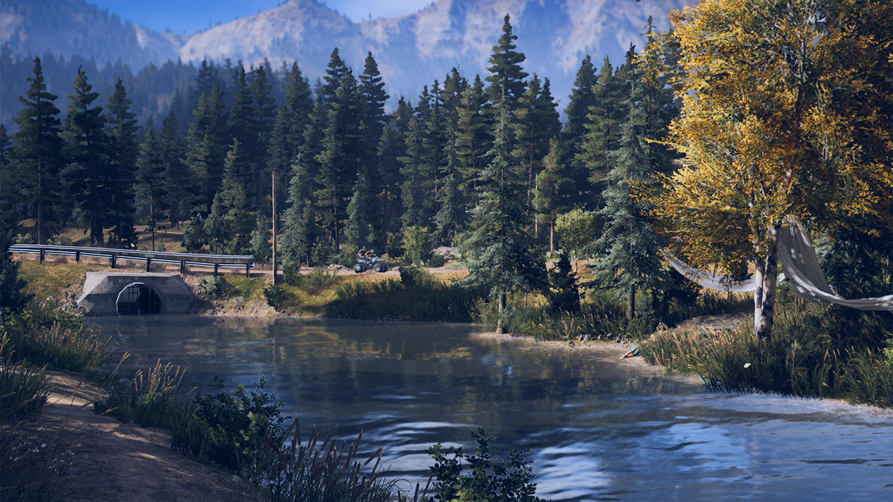
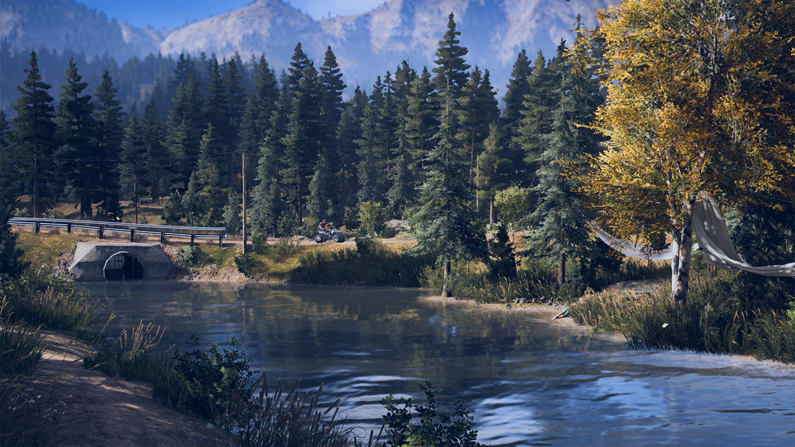
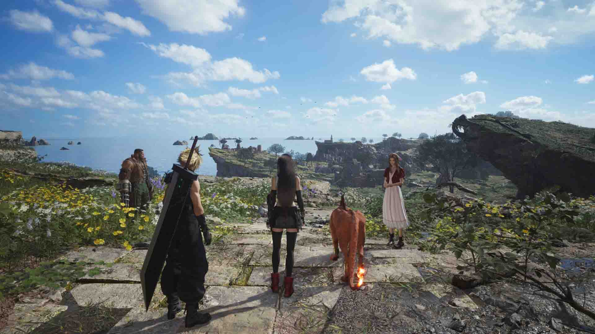
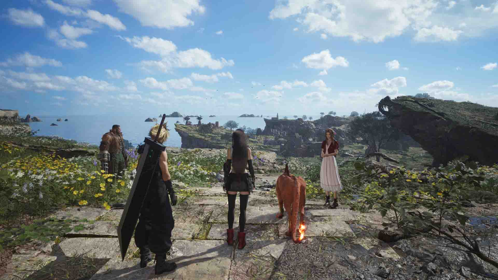

Overview
Purpose
Voidborn Gaming is a compact feature site designed to deliver thoughtful, clearly written game analysis. The site will publish two cornerstone features: a full review of Battlefield 6 and a personal “Top 5 Games of All Time” list. The goal is to provide readers with context, criteria, and conclusions that help them decide what to play and why certain titles matter. The writing favors clarity over hype and aims to be welcoming to both long-time players and curious newcomers.
Audience
The intended audience is adults (18+) who enjoy games and value honest, readable critique. Some visitors will be deciding whether to buy or try Battlefield 6; others will come for perspective on older titles that still hold up. Readers are assumed to be familiar with general gaming terms, but the site avoids insider jargon where possible and explains references in plain language.
Branding
Website Logo
Style Guide
Color Palette
| Primary | Secondary | Accent 1 | Accent 2 |
|---|---|---|---|
Typography
Heading Font: Oswald
Paragraph Font: Open Sans
Normal paragraph example
This site focuses on presenting gaming analysis in a readable and direct tone, using clear hierarchy and contrast.
Colored paragraph example
Highlighted text may appear in accent colors to emphasize quotes or verdicts within reviews.
Navigation
Site Map
Content
Home Page
The home page introduces Voidborn Gaming’s mission—high-quality, independent writing about games—and previews the two feature articles with brief summaries and navigation links. The design will use a dark background with high-contrast text for readability. Visitors will quickly understand the tone and scope of the site: concise, thoughtful, and honest coverage that treats games as both entertainment and art. The home page will also outline how each article was developed to establish trust and invite returning visitors.
Images for the Home Page

Battlefield 6 Review
The Battlefield 6 review evaluates the game across five criteria: core gunplay, map and mode design, team play and class identity, technical performance, and long-term support. It provides a launch-month assessment of how the game performs compared to its predecessors, noting improvements, balance, and player sentiment. The review highlights gameplay strengths such as refined recoil, better squad tools, and realistic map destruction, while also addressing performance concerns and live-service elements. The goal is to answer a clear question: “Is Battlefield 6 worth your time right now?”
Images for Battlefield 6 Review


My Top 5 Games of All Time
This feature presents a personal ranking with commentary on five influential titles: 1) Halo 2 – a milestone in competitive multiplayer and console storytelling, setting standards for online connectivity and narrative scope. 2) Far Cry 5 – a blend of open-world freedom and American frontier satire that balances chaotic gameplay with memorable characters and co-op design. 3) Elden Ring – a vast, interconnected world that rewards experimentation and persistence; its boss design and exploration redefine modern action RPGs. 4) Resident Evil 4 Remake – a masterclass in pacing and atmosphere, combining nostalgia with mechanical precision and visual polish for a new generation. 5) Final Fantasy VII Rebirth – a bold reinterpretation of a classic, merging emotional storytelling with cinematic presentation and layered combat systems. Each entry explains what makes the game enduring and culturally significant while noting how these titles demonstrate the evolution of player agency, design philosophy, and emotional storytelling in interactive media. The article’s tone remains reflective and personal, inviting readers to compare their own formative experiences.
Images for My Top 5 Games
 


 

Wireframes
Create three wireframes for your site. One for each page and list them here.
Home

Battlefield 6 Review

My Top 5 Games of All Time